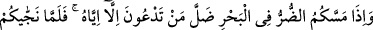
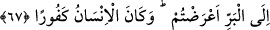
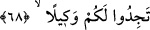

“Doğrusu O, sizin için” ezelde ve ebedde “çok merhametlidir.” Çünkü sizin ihtiyaç
duyduklarınızı hazırlamış, onun zor olan sebeplerini size kolaylaştırmıştır. Bundan
maksad dünyevî rahmet, değerli ve değersiz olarak ikiye ayrılan dünya nimetleridir.
67. Denizde başınıza bir musibet geldiğinde, O’ndan başka bütün yalvardıklarınız
kaybolup gider. O sizi kurtarıp karaya çıkardığında, (yine eski hâlinize) dönersiniz.
İnsanoğlu çok nankördür.
“Denizde başınıza bir musibet” orada boğulma korkusu “geldiğinde, O’ndan başka
bütün yalvardıklarınız kaybolup gider.” Yâni başınıza gelen felaketler sebebiyle
kendilerine yalvardıklarınız ve yardım bekledikleriniz hatırlarınızdan gider. Yüce
Allah’tan başka hatırınıza onlardan hiçbiri gelmez. Bu sıkıntının giderilmesi için yalnız
O’na veya ortaklar koşarak yine O’na yalvarırsınız. Ya da Mesih, melekler ve diğerleri
gibi kendilerine tapıp yalvardığınız tüm ilahlar size yardımdan ve sizi kurtarmaktan
kaybolup gider. Ancak kendisinden felaketleri bertaraf etmesini beklediğiniz yalnızca
Allah’tır.
“O sizi” boğulmaktan “kurtarıp karaya çıkardığında, (yine eski hâlinize)
dönersiniz.” Tevhidden yüz çevirir, putlara tapmaya döner, nimetleri unutup nankörlük
yaparsınız.
“İnsanoğlu çok nankördür.” Nankörlüğü çok fazladır. Âyette ‘siz nankörsünüz’
buyrulmadı. Bu insan cinsinin nimete nankörlükle damgalı olduğunu tescil etmek içindir.
68. O’nun, sizi kara tarafında yerin dibine geçirmeyeceğinden, yahut başınıza taş
yağdırmayacağından emin misiniz? Sonra kendinize bir koruyucu da bulamazsınız.
“O’nun, sizi kara tarafında yerin dibine geçirmeyeceğinden,” Karun gibi kendinizi
emniyette hissettiğiniz yer olan kara parçasını siz üzerinde bulunduğunuz halde veya siz
üzerinde bulunmanız sebebiyle ters çevirip batırmayacağından emin misiniz?
Müftî Sa‘dî der ki: “Yâni karanın sizin üzerinde bulunduğunuz tarafını tersyüz eder,
onun yere geçirilmesiyle sizin helâkiniz gerçekleşir. Yoksa onların yüzünden kara
parçasının batırılması onların helâk edilmesini gerektirmez.”
Kâşifî de şöyle der: “Yoksa denizden karaya çıktık diye emin mi oldunuz? Yâni sizi